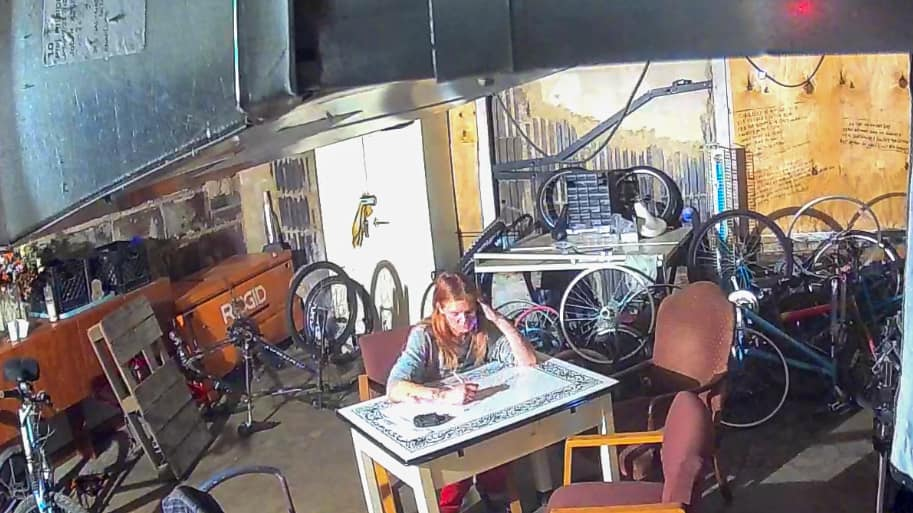

Mobile uploads
I’m a huge fan of this woman. This is White Kat.
I like to live life hard and fast. And women like White Kat are the living essence of that ideal. I’m pretty sure White Kat is down for pretty much anything at any time. (The most hardcore people on the street are women.)
I spent all our charity money on winter survival supplies recently. So for the time being I don’t have any money to pay people to do jobs around the property. Kat wants a job SO bad because she’s out of money right now. And no money means no fun.
So instead, she is seen here drawing. And that got me thinking.
I see a lot of homeless people that like to draw and color. It’s relaxing and calming.
If you happen to have some extra coloring books, pens, pencils, crayons, etc… I’d love to have them.
Some people like to do projects with their kids to help local homeless people. You could even put little craft kits together in a bag to give to homeless people. All kinds of crafts would be appreciated. Making bead bracelets, for example, would be fun.
Putting coloring or craft kits together over Christmas break might be a fun family project.
Thanks again for everything.